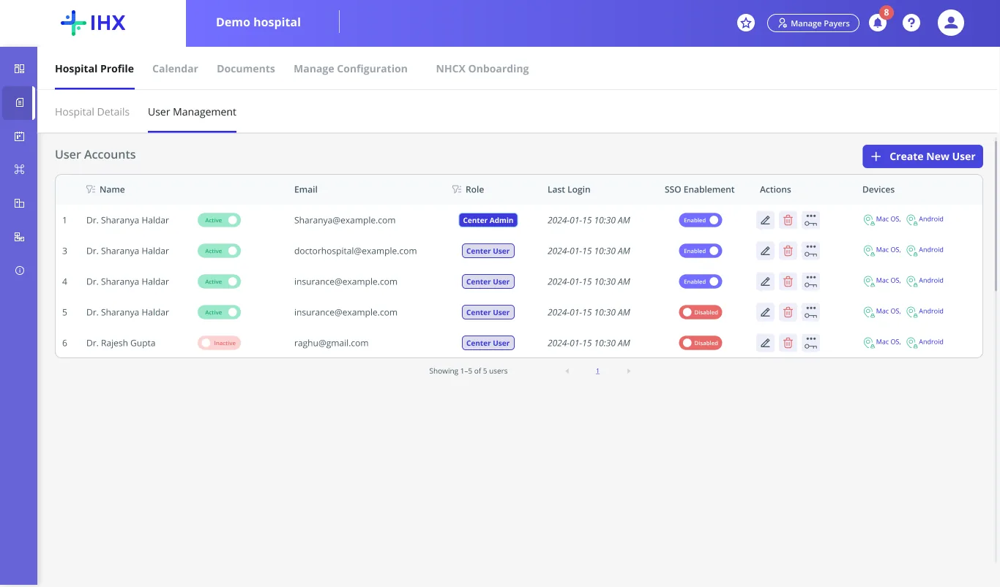
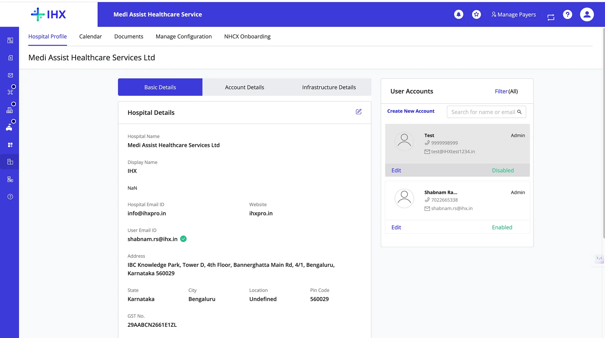
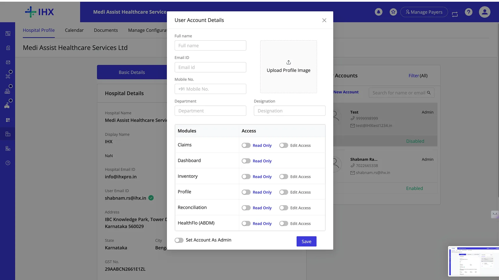
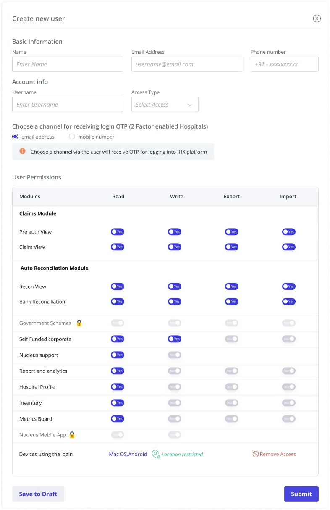
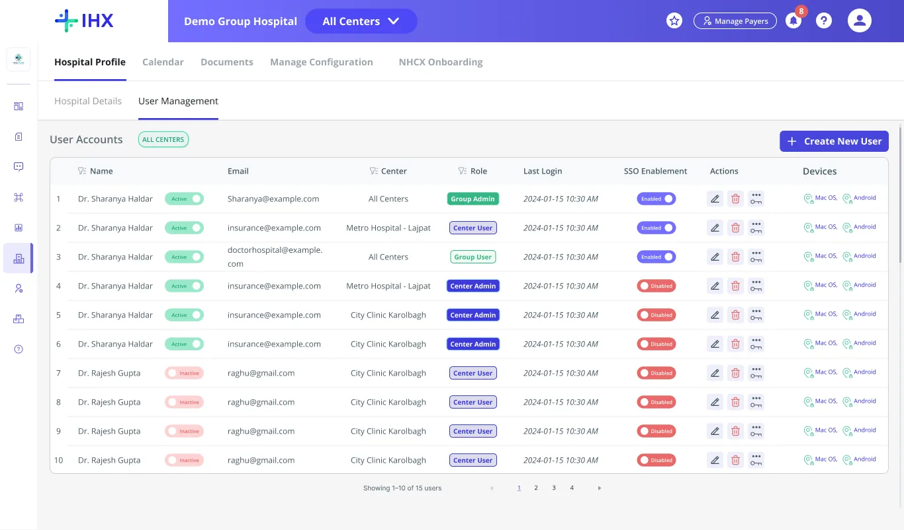
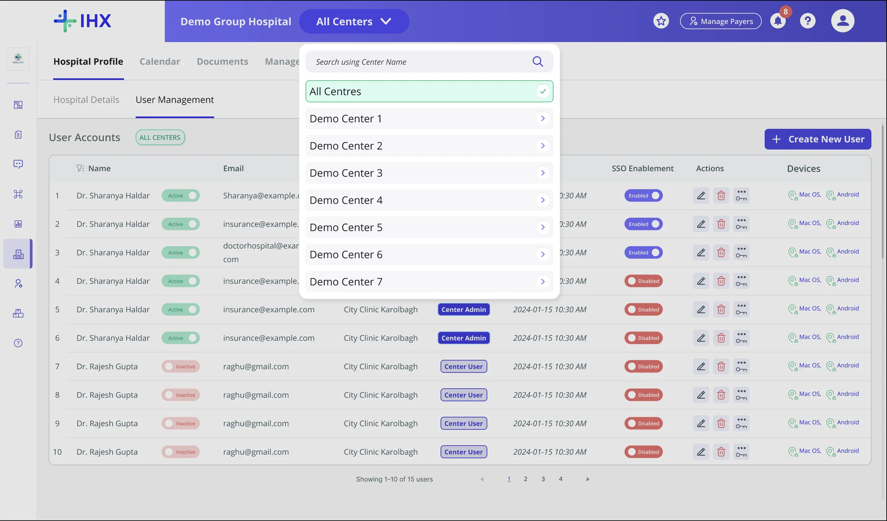

80 → 10
Support tickets routed to Ops
A healthcare claims platform used by thousands of hospitals had no way for those hospitals to manage their own staff access, until this project gave it to them.
images/user-management-table-single-center.webp
No in-product way to manage users. Every action needed a person outside the hospital.
No quick way to deactivate a user, a real security concern for hospitals of any size, on a platform holding patient and financial data.
A discoverable, holistic UI for user management, designed around a real role hierarchy and real user needs.
87.5% reduction in user ops tickets. User creation 30 min by email → 5 min self-serve in product. Deactivating a user: 4 steps → 1.
Problems users can solve themselves deserve product-led solutions, not process. Digging into this one surfaced real security lapses too.
The module existed. It was not solving the problem, and in one place, it was actively misleading users. Four problems defined the work.
Creation, editing, and disabling all existed as features. Hospital staff simply did not know the module was there.
Deactivating a user meant email, to the account manager, to DB support: no one owned it end to end.
Enterprise chains could see their centers, but could not manage a single user across them.
SSO, 2FA, and new users all routed through support, a project manager, and database engineering.
In the Account Details section, hospital staff could update their own bank details, believing insurers were automatically updated with that information. They were not.
Not a summary. What the people closest to it actually said: hospital admins, the customer support team, and account management.
The module existed. The people meant to use it never found it.
VisibilityA centralized view with no centralized control: visibility without a single action to take.
Group ControlMost hospitals gave up partway. The account stayed active because revoking it took too long.
Access Revocation“Every time we were enabling 2FA, the hospitals had a problem. Users forgot their emails, had not verified them, or used dummy emails to create a login. It became a painful, lengthy, manual process involving the account manager, the project manager, and the database support team. That broke the platform's stickiness: it pushed users out of the platform entirely, submitting claims by mail instead, because they were not able to log in.”
Three screens carried most of the friction: the hospital's own profile, the modal used to create or edit a user, and group login itself.
images/old-hospital-profile-panel.webp
images/old-create-user-modal.webp
images/old-group-login-ui.webp| Old | New | |
|---|---|---|
| Permission granularity | Read Only / Edit, one toggle | Read, Write, Export, Import per module |
| Module structure | Six flat buckets | Grouped: Claims Module, Auto Reconciliation Module |
| Hierarchy | None | Group Admin → Group User / Center Admin → Center User |
Scope expanded mid-project from single-center admins to Group Admins, tracking the group-hospital friction from Section 01.
Creates the first Group Admin, the only Ops-owned step left in v1
One admin, the whole chain, across every mapped center
Manages one center's team, scoped at login
Scoped to their own center's workflows
Cross-center visibility without admin rights
| Screen | Decision | Closes |
|---|---|---|
| Reset Password modal | Admin-triggered reset, live strength / requirement checklist | No reset path |
| User Management table | Full table: Name, Email, Role, Last Login, SSO, Devices, one "Create New User" CTA | No visibility |
| Create New User modal | OTP channel (email / mobile), no password field | Password custody risk |
| Create New User modal | Read / Write / Export / Import per module, grouped by real product IA | Flat permissions |
| Locked modules (Govt Schemes, Nucleus App) | Lock icon instead of hiding the feature | Discoverability |
| Group Hospital view | "All Centers" switcher, centers list with count | Group hospitals, zero control |
| Create User (group level) | Branches into Group Admin / User vs Center Admin / User | No hierarchy |
| Hospital Details | Tabs cut four to two, Infrastructure folded in | Dead tabs |
| User table row | Inactive alert at four weeks | Deactivation lag |
Name, Email, Role, Last Login, SSO, Devices, and one clear "Create New User" CTA. An admin-triggered reset with a live strength and requirement checklist. Inactive accounts flagged at four weeks.
No visibility No reset path Deactivation lagimages/user-management-table-single-center.webpimages/figma-inactive-user-alert.webpThe row itself flags it, a warning icon next to the name.
images/inactive-user-alert-popup.webpThe system flags this proactively: at four weeks with no login, the hospital gets this prompt directly, before anyone has to ask Ops to check.
Basic info and an OTP delivery channel, email or mobile, no password field anywhere. Permissions are Read, Write, Export, Import per module, grouped by the platform's real IA. Locked modules stay visible with a lock icon instead of disappearing.
Password custody risk Flat permissions Discoverabilityimages/create-user-modal-basic-otp.webp
An "All Centers" switcher and a centers list with count. Creating a user at group level branches into Group Admin / User or Center Admin / User. Hospital Details drops from four tabs to two, Infrastructure folded in. Filtering by center never changes the Group Admin's global scope.
Group hospitals, zero control No hierarchy Dead tabsimages/group-hospital-user-table.webp
images/create-user-role-branch.webpimages/group-center-switcher.webp
87.5% reduction, roughly 2,100 support tickets eliminated a month.
Down from an average of 30 minutes over email, a process spanning multiple teams.
A four-step manual process with no time guarantee on any step, now one step inside the product.
A support ticket volume problem is rarely a support problem. Most of the time, it is a discoverability and trust problem with the solution that already exists.
IHX · In-Product User Management Module Redesign, designed end to end
Open to product design roles and contract work.
Download resume